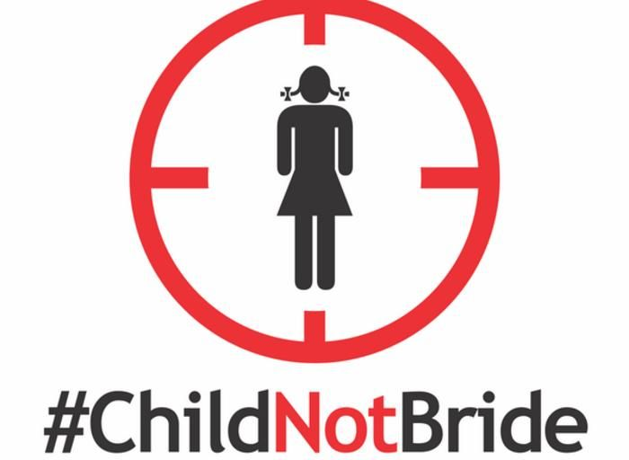

Featured News & Awareness
Exposing critical social issues affecting vulnerable populations globally, from gender-based violence to abuse survivors of all backgrounds

Child MarriageMillions of Girls Still Trapped in a Cycle of Poverty and Abuse
Child marriage remains one of the most widespread human rights violations, stripping girls of their childhood, health, and future.
"How Aunties Abused Us as Children": Male Celebrities Speak Out
Survivors are breaking the silence on childhood sexual abuse by female perpetrators, a deeply underreported crisis.
 FGM
FGM
Ending FGM: Protecting the Rights and Health of Girls
With 230 million survivors worldwide, FGM remains a critical health and human rights emergency demanding urgent global action.
 Domestic Violence
Domestic Violence
Breaking the Cycle: Domestic Violence and Supporting Survivors
Domestic violence affects one in three women globally. Inside the policy failures, survivor stories, and the advocates fighting back.